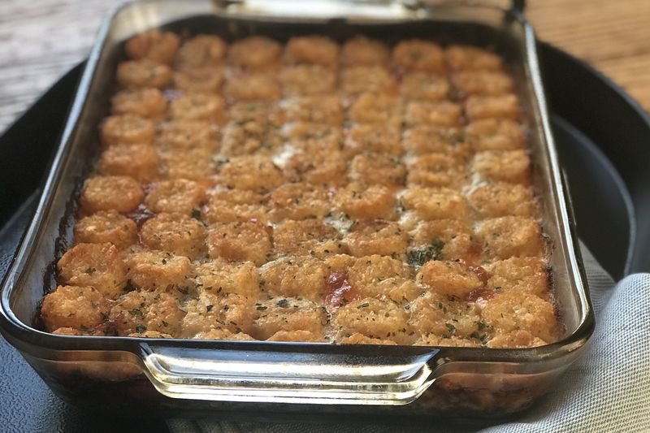

Mashed Potato Recipes

Description
Ingredient List
Steps
- Submerge the potatoes in a bowl of cold water to keep them from turning brown while you are chopping them.
- Cut the potatoes into similar-sized chunks so they will cook evenly: the cubes should be about 1½ to two inches wide.
- Put the cut potatoes in a large pot. Use a pot large enough to hold the potatoes with enough water to cover, plus room for the water to boil up without boiling over. Add salt to the water, if desired. Bring the water to a boil over high heat, then reduce heat to medium low.
- Cover the pot and simmer until potatoes are tender — about 15 to 20 minutes. A knife tip inserted into a potato should meet no resistance; if the potato clings to the knife, the potatoes need to cook longer. When potatoes are done, remove from heat and drain immediately.
- Reserve the potato water if you would like to use it in place of butter or cream when mashing, or if you plan to make a vegetable soup stock or sourdough bread:
- Return the drained potatoes to the pot and heat over medium-high heat for about a minute to cook off any excess water. This guarantees your mashed potatoes won't be watery. Stir gently to make sure all the potatoes dry out. The edges will start to look white and flaky, but don't let the potatoes scorch. Meanwhile, heat the butter and cream in a small saucepan at a low temperature. (You can also use the microwave for this step.)
- Now we get to the mashing part. For this recipe, we used a food mill to break up the potatoes and remove any lumps. Once the potatoes have been passed through the mill, drizzle half of your hot cream mixture through and around the grate to get every last bit of potato. Gently stir in the remaining butter and cream.
- Taste the potatoes for seasoning and adjust to taste. Test for consistency, too: If the potatoes are too thick, add more cream. Other herbs and spices can be added at this point as well: chopped chives, Italian parsley, Parmesan cheese, crumbled bacon, roasted garlic, chopped scallions, or creamed leeks are all delicious additions.